News
Updates on research, teaching, leadership, and milestones.
June 6, 2026: Released openseespy-solvers, a Python package with SciPy-style sparse linear and eigen solvers for OpenSeesPy’s PythonSparse command (post, docs, source).
May 31, 2026: Website launched — research notes, OpenSeesPy examples, and project updates will be posted in Posts.
May 28, 2026: Lightning talk at the 2026 NHERI Computational Symposium — Enabling Higher-Resolution Nonlinear Structural Analysis Through GPU-Accelerated Solvers (session abstract, talk page).
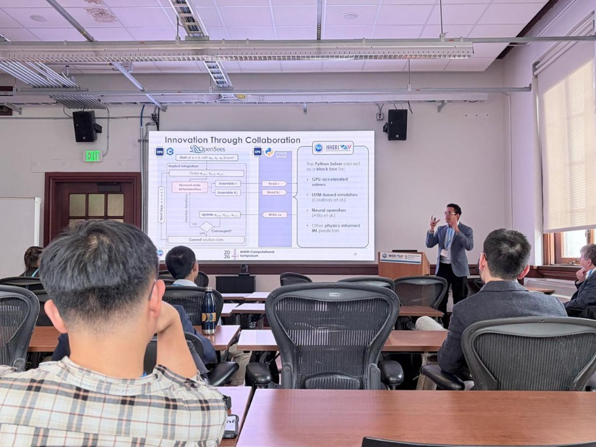
2026 NHERI Computational Symposium, Hearst Memorial Mining Building, UC Berkeley — Innovation Through Collaboration (OpenSees and GPU-accelerated Python solvers). See the talk page.
September 2025 – June 2026: Shah Fellowship on Catastrophic Risk, Department of Civil and Environmental Engineering, Stanford University.
September 2025: Participated in the EERI Learning From Earthquakes Travel Study in Mexico City.
July 2025: Journal article on experimental and numerical simulation of a three-story mass timber building with pivoting walls published in Journal of Structural Engineering, 151(7) (doi:10.1061/JSENDH.STENG-13781).
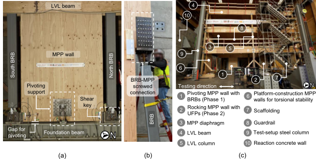
Figure 3, Journal of Structural Engineering 151(7) (doi:10.1061/JSENDH.STENG-13781; ResearchGate) — pivoting-wall specimen (project page).
May 15, 2025: Participated in the Stanford Engineering Centennial Showcase with the Simpson Lab — a scaled shaking-table demo of mass timber rocking walls with BRBs and outreach on NHERI Converging Design testing (lab recap).
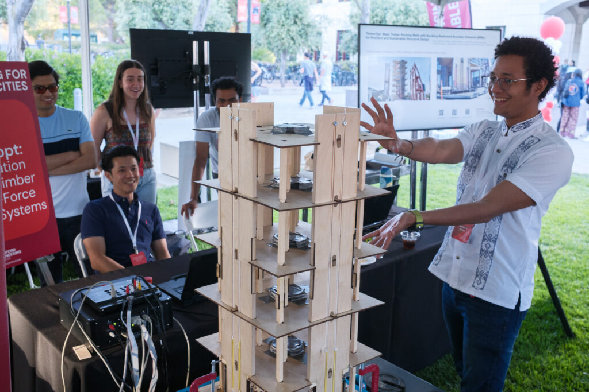
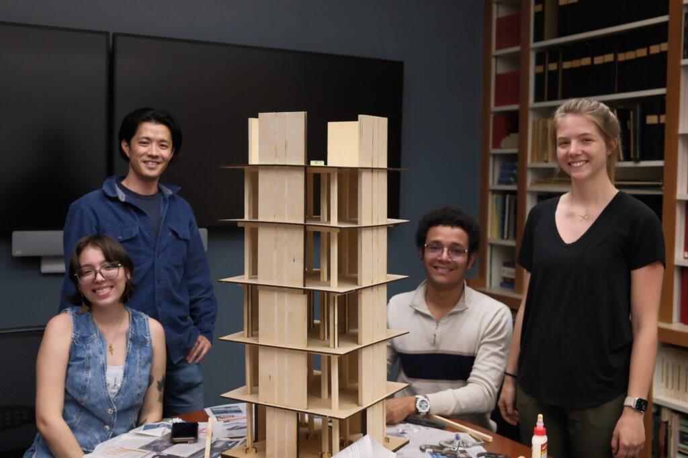
Stanford Engineering Centennial Showcase, May 15, 2025 (photos courtesy of Simpson Lab).
April 2025: 2025 EERI Seismic Design Competition, Berkeley, CA — Co-President, EERI Student Leadership Council.
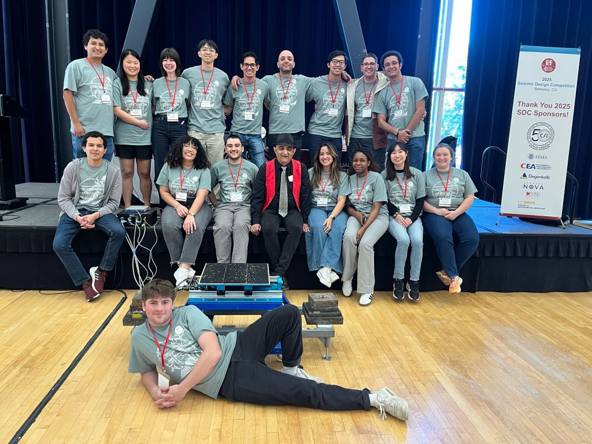
2025 EERI Seismic Design Competition, Berkeley, CA.
February 24, 2025: Advanced to PhD candidacy in Civil and Environmental Engineering, Stanford University.
January 2025 – March 2025: Teaching Assistant for CEE 282 — Nonlinear Structural Analysis, Stanford University (Winter Quarter 2025).
July 1, 2024 – July 5, 2024: Attended the 18th World Conference on Earthquake Engineering (18WCEE) in Milan, Italy, with the Simpson Lab — presented Accelerating Finite-Element Structural Elastic Dynamic Analysis Using GPU Computing (lab recap, publications).
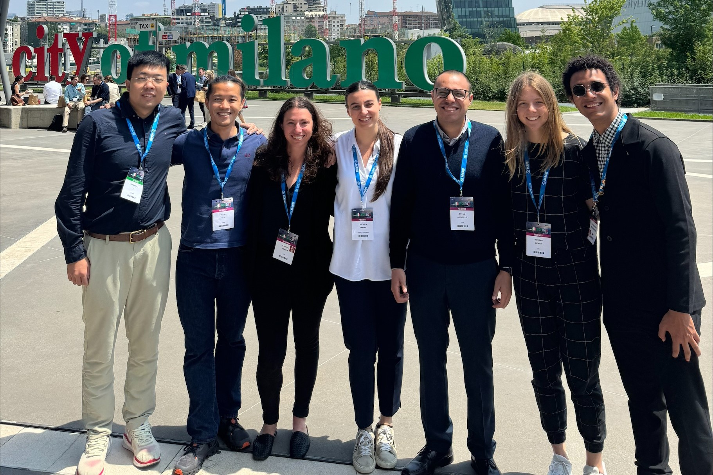
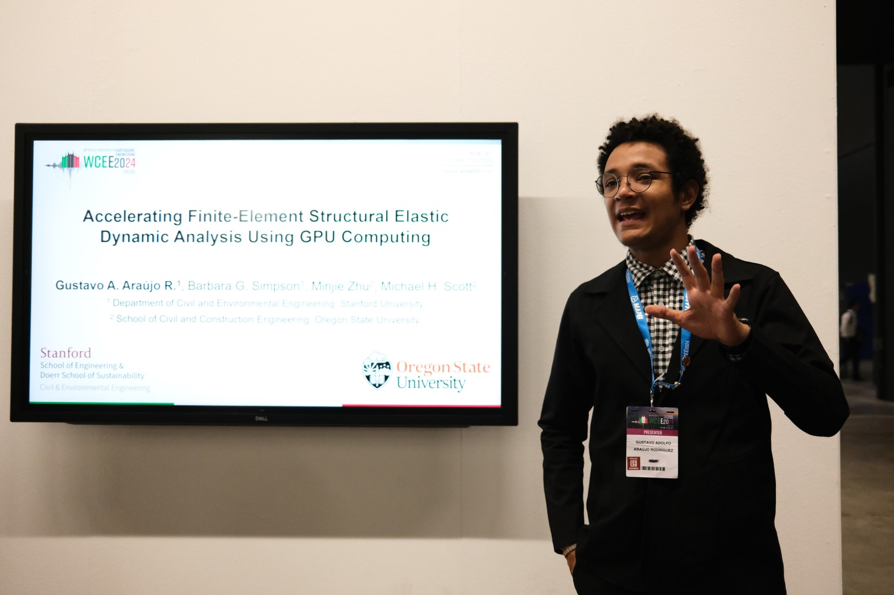
18WCEE, Milan, Italy, July 2024 (photos courtesy of Simpson Lab).
April 2024: 2024 EERI Seismic Design Competition, Seattle, WA — Lead Seismic Design Competition Chair, EERI Student Leadership Council.
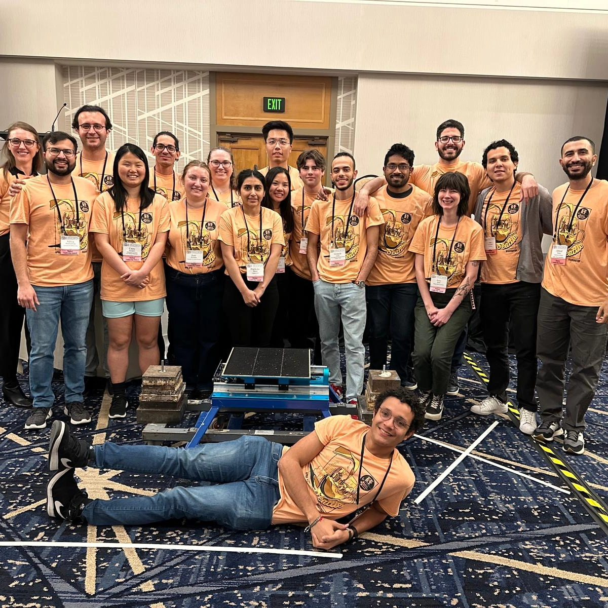
2024 EERI Seismic Design Competition, Seattle, WA.
January 19, 2024: On site for Phase II shake-table testing of a six-story mass timber building at UC San Diego as part of NHERI Converging Design — post-tensioned rocking walls with BRBs and UFP energy dissipators (project page).


Phase II shake-table testing, UC San Diego, January 2024 (NHERI Converging Design).
December 2023: Completed MS in Wood Science at Oregon State University.
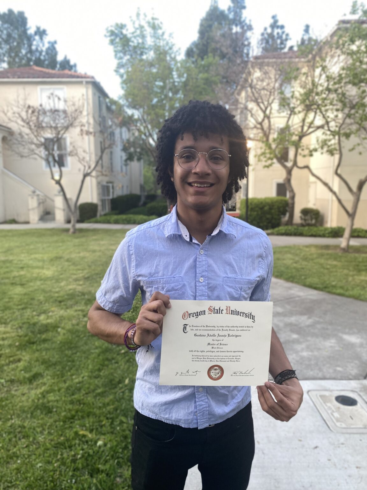
MS in Wood Science, Oregon State University, March 2023.
August 2023: Runner-up, PEER Lightning Talks Contest, UC Berkeley.
June 21, 2023: Presented Cyclic Testing and Numerical Modeling of a Three-Story Mass-Timber Building with a Pivoting Mass Ply Panel Spine and Buckling-Restrained Energy Dissipators at the 13th World Conference on Timber Engineering (WCTE), Oslo, Norway (publications, project page).
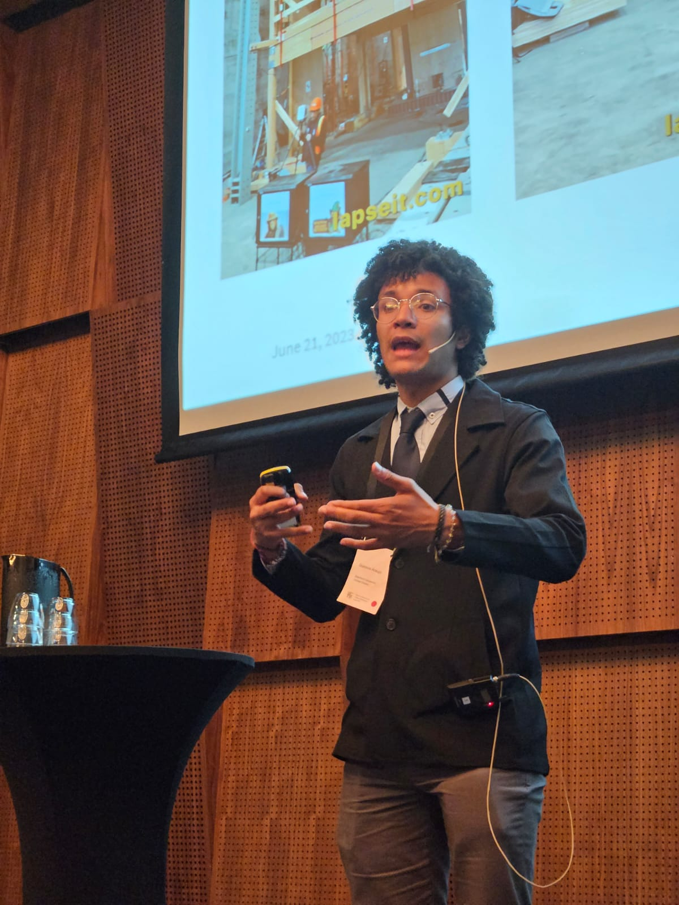
13th World Conference on Timber Engineering (WCTE), Oslo, Norway, June 2023.
April 2023: 2023 EERI Seismic Design Competition, San Francisco, CA — Seismic Design Competition Chair, EERI Student Leadership Council.
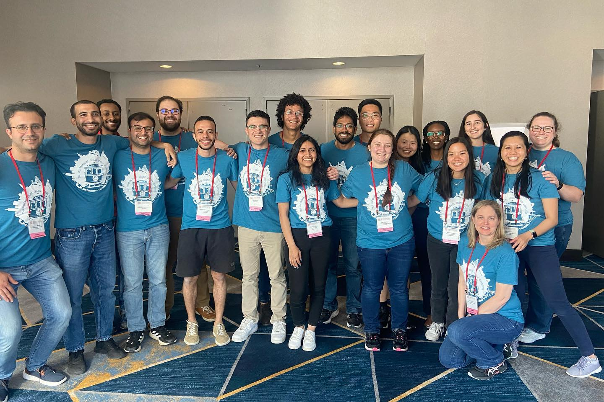
2023 EERI Seismic Design Competition, San Francisco, CA.
January 2023: Began PhD in Civil & Environmental Engineering at Stanford University (Universidad del Norte alumni profile).
November 2022: Completed full-scale cyclic testing of a three-story mass timber building with pivoting walls at Oregon State University.
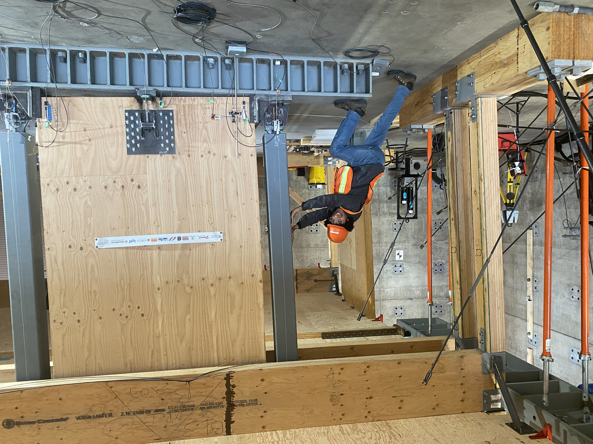
OSU structural laboratory, November 2022.
September 20, 2022: Winner, PEER Pitches Contest — Best Research Pitch at the PEER Researchers’ Workshop, Richmond Field Station, UC Berkeley.
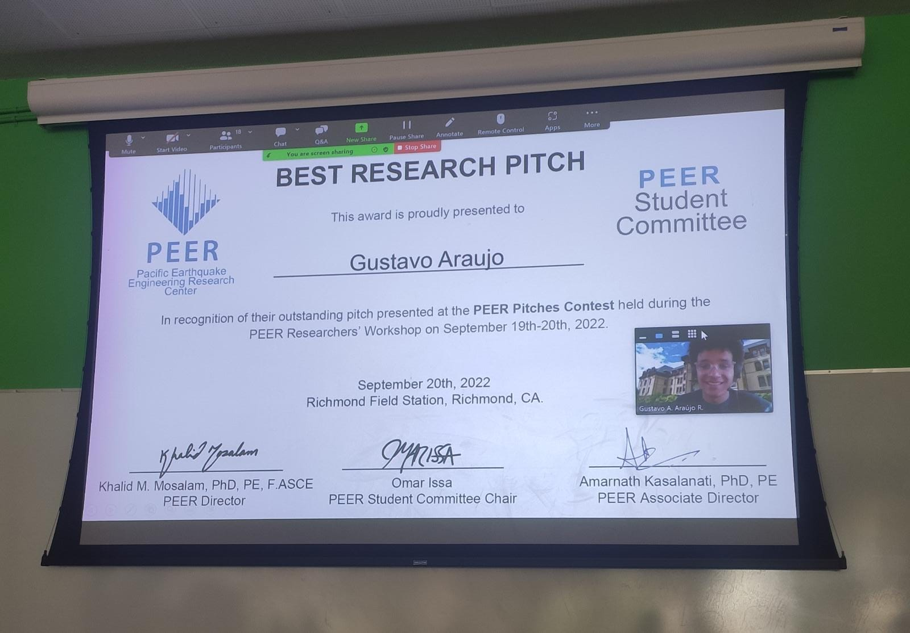
PEER Pitches Contest, Pacific Earthquake Engineering Research Center, Richmond Field Station, CA.
May 27, 2021: Uninorte press coverage of MS thesis on seismic risk in thin lightly reinforced concrete wall buildings (Cum Laude).
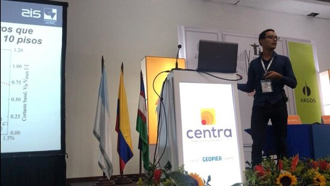
Photo courtesy of Universidad del Norte (Cum Laude thesis on TLRCW building systems).
February 2021: Defended MS thesis in Civil Engineering at Universidad del Norte (Cum Laude).
September 2020: Began MS in Wood Science at Oregon State University (Uninorte video profile).

Universidad del Norte video profile (Spanish).
Summer 2017: Completed PEER Summer Internship at UC Berkeley as an undergraduate — nonlinear modeling of reinforced concrete wall buildings with OpenSees under Prof. Jack P. Moehle.
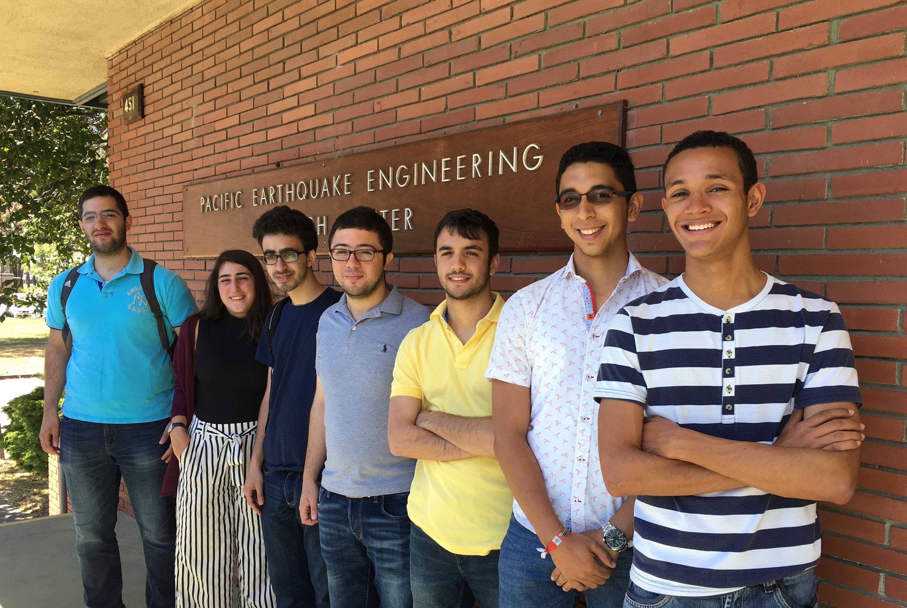
PEER summer interns, 2017 — Pacific Earthquake Engineering Research Center, UC Berkeley.